#501 · horizontal · horizontal · 18040x13236 · Public domain File:Reise und Influenz-Karte der vorzüglichsten Eil-Post und Brancardwagen Course in dem Oesterreichischen Kaiserstaate. (IA dr reise-und-influenz-karte-der-vorzglichsten-eil-post-und-brancardwagen-cour-10167000).jpg · 1280x939 https://commons.wikimedia.org/wiki/File:Reise_und_Influenz-Karte_der_vorz%C3%BCglichsten_Eil-Post_und_Brancardwagen_Course_in_dem_Oesterreichischen_Kaiserstaate._(IA_dr_reise-und-influenz-karte-der-vorzglichsten-eil-post-und-brancardwagen-cour-10167000).jpg#502 · horizontal · horizontal · 11856x9524 · Public domain File:Versuch einer Übersicht der Packetboot- und Dampfschiff-Fahrt-Verbindungen des Europäischen Continentes mit seinen nächsten (IA dr versuch-einer-bersicht-der-packetboot-und-dampfschiff-fahrt-verbindungen-10504000).jpg · 1280x1028 https://commons.wikimedia.org/wiki/File:Versuch_einer_%C3%9Cbersicht_der_Packetboot-_und_Dampfschiff-Fahrt-Verbindungen_des_Europ%C3%A4ischen_Continentes_mit_seinen_n%C3%A4chsten_(IA_dr_versuch-einer-bersicht-der-packetboot-und-dampfschiff-fahrt-verbindungen-10504000).jpg
#505 · horizontal · horizontal · 2145x1541 · CC0 File:-Prose di M. Pietro Bembo nelle quali si ragiona della volgar lingua ... diuise in tre libri.- -Author- Pietro BEMBO, Cardinal. -Contributor- Benedetto VARCHI -Publication Details- Firenze - - Endleaves (72c9).jpg · 1280x920 https://commons.wikimedia.org/wiki/File:-Prose_di_M._Pietro_Bembo_nelle_quali_si_ragiona_della_volgar_lingua_..._diuise_in_tre_libri.-_-Author-_Pietro_BEMBO,_Cardinal._-Contributor-_Benedetto_VARCHI_-Publication_Details-_Firenze_-_-_Endleaves_(72c9).jpg
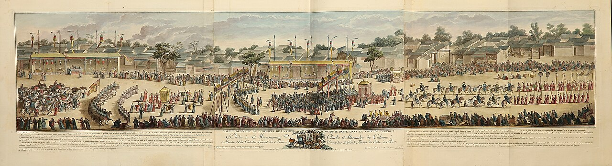
#506 · horizontal · horizontal · 3549x969 · Public domain File:Conquests of the Emperor of China by Helman, c1785.jpg · 1280x349 https://commons.wikimedia.org/wiki/File:Conquests_of_the_Emperor_of_China_by_Helman,_c1785.jpg
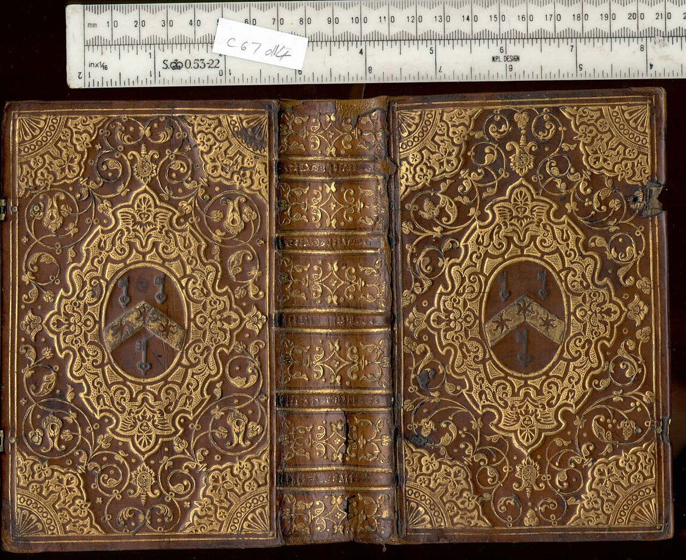
#507 · horizontal · horizontal · 1536x1255 · CC0 File:Iesu Christi D N Nouum Testamentum - Upper and lower cover and spine (c67d14).jpg · 1280x1046 https://commons.wikimedia.org/wiki/File:Iesu_Christi_D_N_Nouum_Testamentum_-_Upper_and_lower_cover_and_spine_(c67d14).jpg
#510 · horizontal · horizontal · 2530x1690 · CC0 File:M H V Cremonensis de arte poetica lib. III-Romae apud Ludovicum Vicentinum - Endleaves (C4h5).jpg · 1280x855 https://commons.wikimedia.org/wiki/File:M_H_V_Cremonensis_de_arte_poetica_lib._III-Romae_apud_Ludovicum_Vicentinum_-_Endleaves_(C4h5).jpg
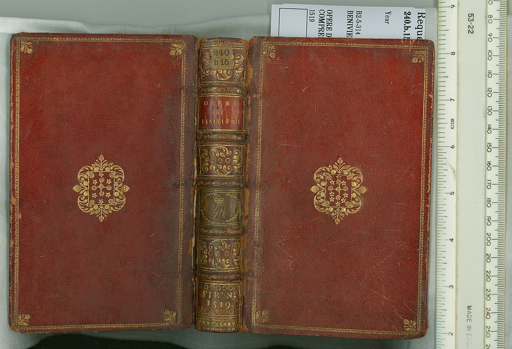
#511 · horizontal · horizontal · 2160x1473 · CC0 File:Opere di Hierony. Benivieni - Upper and lower cover and spine (240b15).jpg · 1280x873 https://commons.wikimedia.org/wiki/File:Opere_di_Hierony._Benivieni_-_Upper_and_lower_cover_and_spine_(240b15).jpg
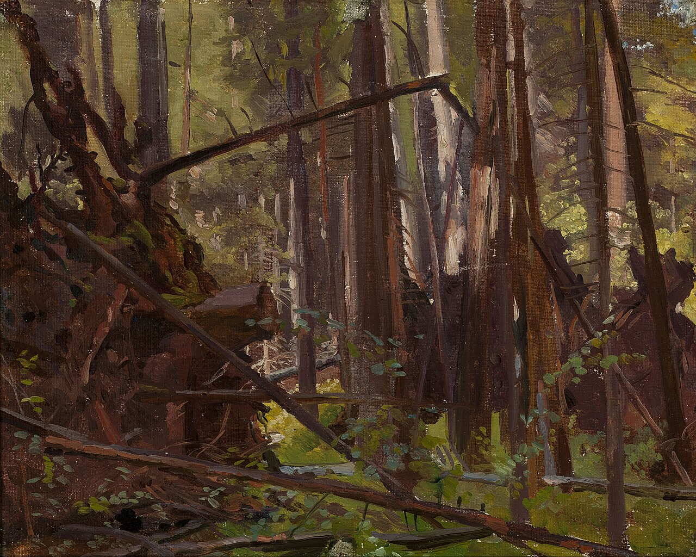
#512 · horizontal · horizontal · 4292x3432 · Public domain File:Józef Chełmoński Krajobraz – motyw z Białowieży.jpg · 1280x1024 https://commons.wikimedia.org/wiki/File:J%C3%B3zef_Che%C5%82mo%C5%84ski_Krajobraz_%E2%80%93_motyw_z_Bia%C5%82owie%C5%BCy.jpg
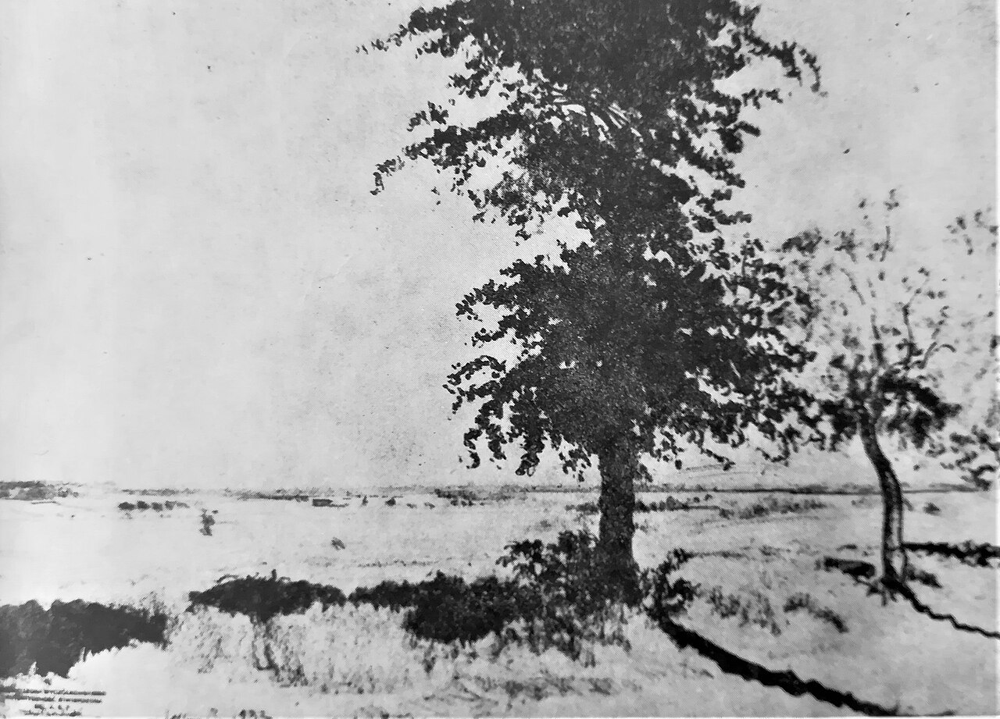
#513 · horizontal · horizontal · 3037x2186 · Public domain File:Leon Wyczółkowski - Motyw z Gościeradza.jpg · 1280x921 https://commons.wikimedia.org/wiki/File:Leon_Wycz%C3%B3%C5%82kowski_-_Motyw_z_Go%C5%9Bcieradza.jpg
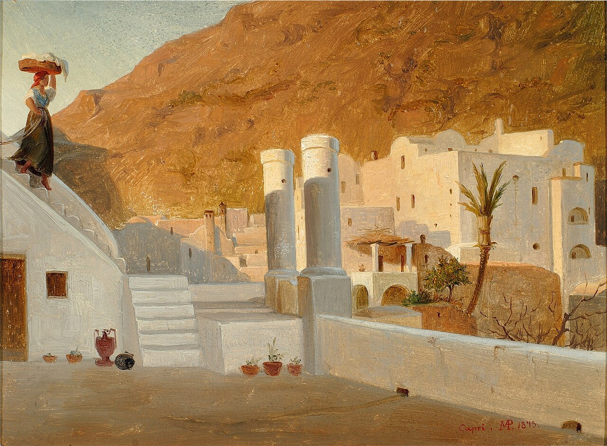
#514 · horizontal · horizontal · 3239x2383 · Public domain File:Maksymilian Antoni Piotrowski - Motyw włoski – Capri.jpg · 1280x942 https://commons.wikimedia.org/wiki/File:Maksymilian_Antoni_Piotrowski_-_Motyw_w%C5%82oski_%E2%80%93_Capri.jpg
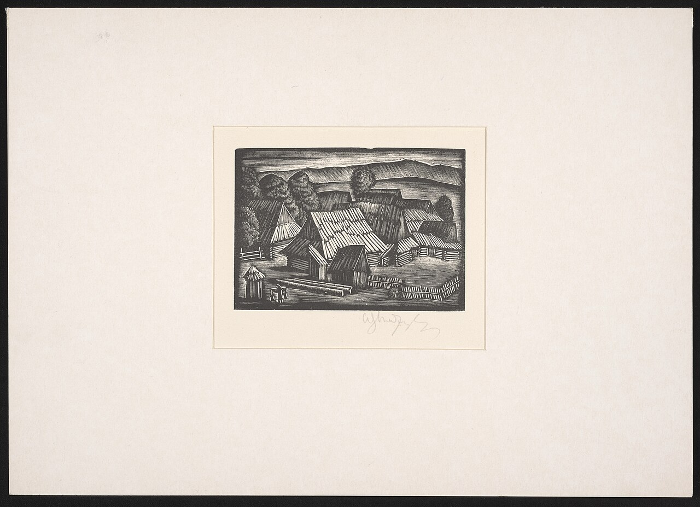
#515 · horizontal · horizontal · 8379x6067 · Public domain File:Motyw z Podhala (165571005).jpg · 1280x927 https://commons.wikimedia.org/wiki/File:Motyw_z_Podhala_(165571005).jpg
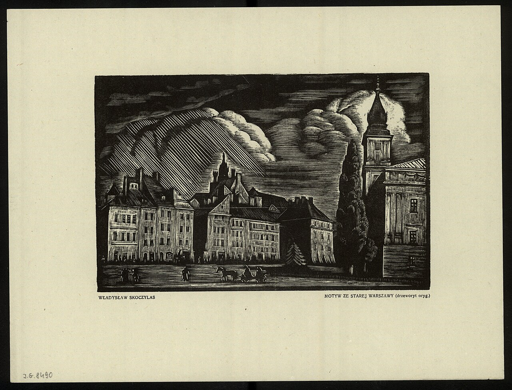
#516 · horizontal · horizontal · 7079x5404 · Public domain File:Motyw ze starej Warszawy (15382432).jpg · 1280x977 https://commons.wikimedia.org/wiki/File:Motyw_ze_starej_Warszawy_(15382432).jpg
#523 · horizontal · horizontal · 3600x2531 · Public domain File:Hans Baldung Grien, Oldingehoved, set bagfra, fra oven fra venstre, , KKS6705, Statens Museum for Kunst.jpg · 1280x900 https://commons.wikimedia.org/wiki/File:Hans_Baldung_Grien,_Oldingehoved,_set_bagfra,_fra_oven_fra_venstre,_,_KKS6705,_Statens_Museum_for_Kunst.jpg
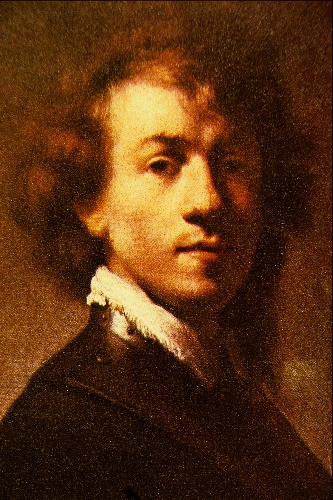
#524 · vertical · vertical · 1024x1536 · Public domain File:Artist as a Young Man - Rembrandt Harmenszoon van Rijn.png · 1024x1536 https://commons.wikimedia.org/wiki/File:Artist_as_a_Young_Man_-_Rembrandt_Harmenszoon_van_Rijn.png
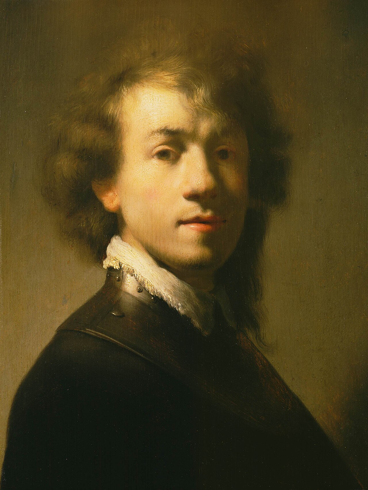
#525 · vertical · vertical · 2257x3000 · Public domain File:Rembrandt van Rijn (atelier kopie) - Portret van Rembrandt met een ringkraag.jpg · 1280x1701 https://commons.wikimedia.org/wiki/File:Rembrandt_van_Rijn_(atelier_kopie)_-_Portret_van_Rembrandt_met_een_ringkraag.jpg
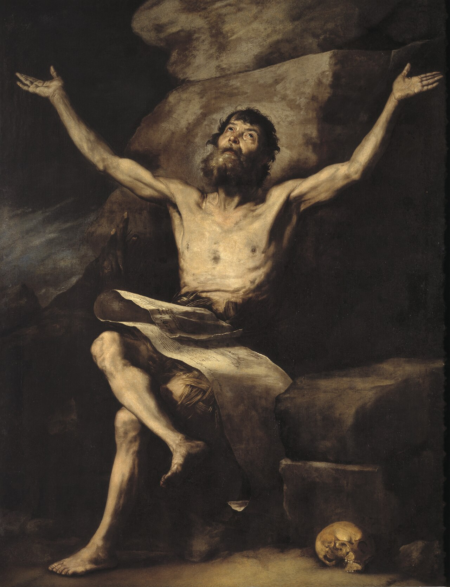
#526 · vertical · vertical · 2683x3502 · Public domain File:St Paul the Hermit - Nationalmuseum - 18499.tif · 1280x1671 https://commons.wikimedia.org/wiki/File:St_Paul_the_Hermit_-_Nationalmuseum_-_18499.tif
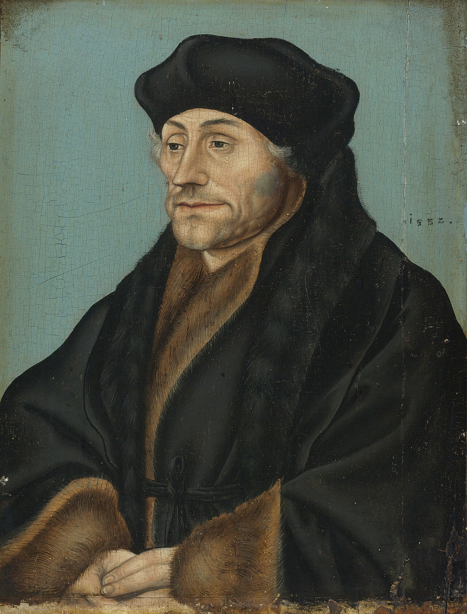
#527 · vertical · vertical · 3045x4000 · Public domain File:Werkstatt von Lucas Cranach d.Ä. - Porträt des Erasmus von Rotterdam.jpg · 1280x1681 https://commons.wikimedia.org/wiki/File:Werkstatt_von_Lucas_Cranach_d.%C3%84._-_Portr%C3%A4t_des_Erasmus_von_Rotterdam.jpg
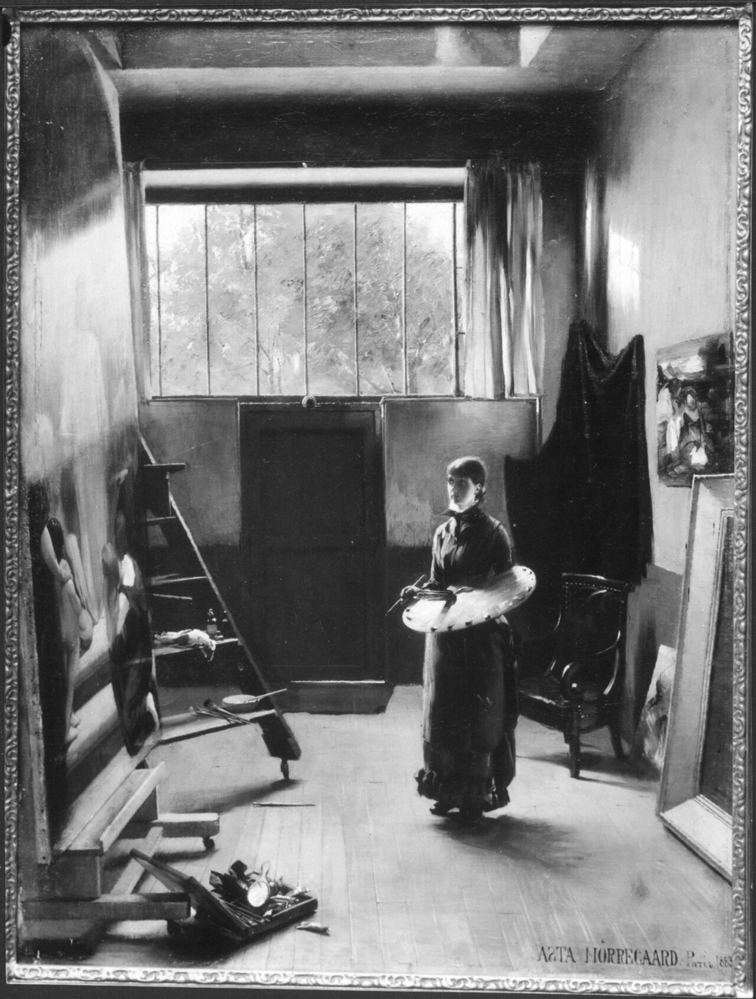
#528 · vertical · vertical · 1290x1705 · Public domain File:Asta Nørregaard - In the Studio - I atelieret - Norsk portrettarkiv - Riksantikvaren - N000403.jpg · 1280x1692 https://commons.wikimedia.org/wiki/File:Asta_N%C3%B8rregaard_-_In_the_Studio_-_I_atelieret_-_Norsk_portrettarkiv_-_Riksantikvaren_-_N000403.jpg
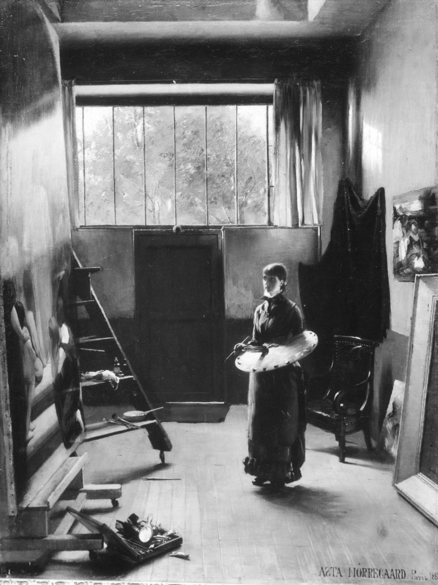
#529 · vertical · vertical · 1205x1609 · Public domain File:Asta Nørregaard - In the Studio - I atelieret - Norsk portrettarkiv - Riksantikvaren - N000403 (cropped).jpg · 1205x1609 https://commons.wikimedia.org/wiki/File:Asta_N%C3%B8rregaard_-_In_the_Studio_-_I_atelieret_-_Norsk_portrettarkiv_-_Riksantikvaren_-_N000403_(cropped).jpg
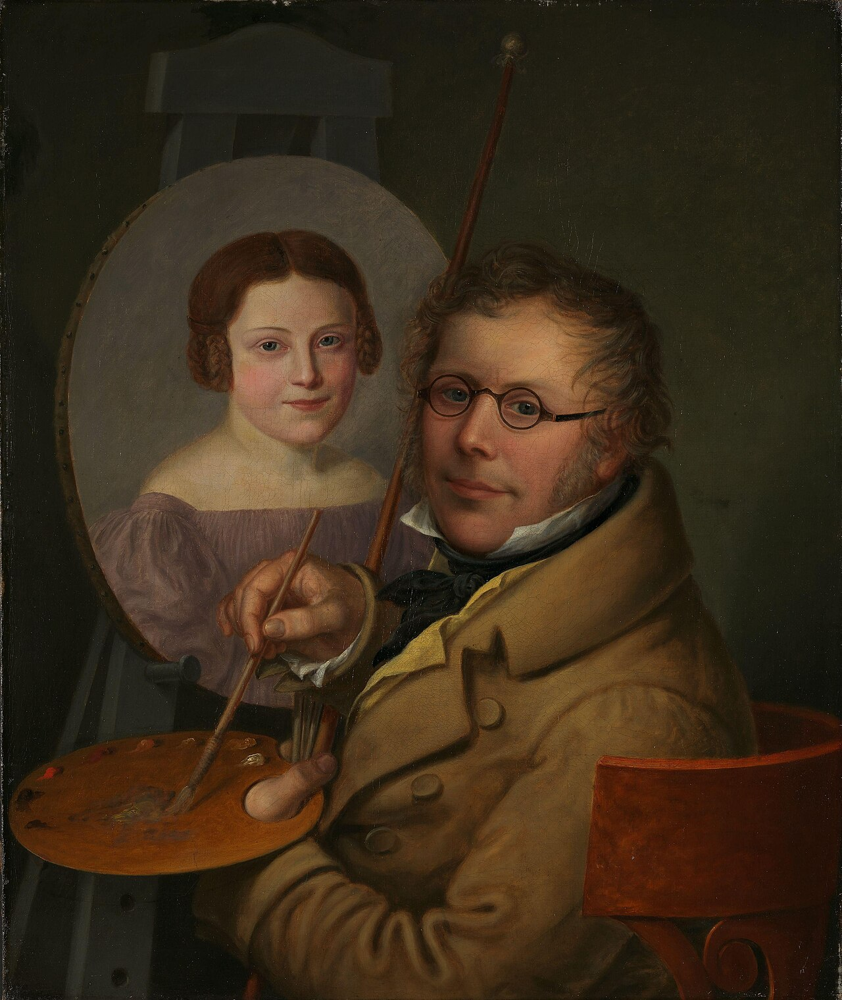
#530 · vertical · vertical · 3370x4000 · Public domain File:Jacob Munch - Portrait of Sophie and Jacob Munch - NMK.2017.0243 - National Museum of Art, Architecture and Design.jpg · 1280x1519 https://commons.wikimedia.org/wiki/File:Jacob_Munch_-_Portrait_of_Sophie_and_Jacob_Munch_-_NMK.2017.0243_-_National_Museum_of_Art,_Architecture_and_Design.jpg
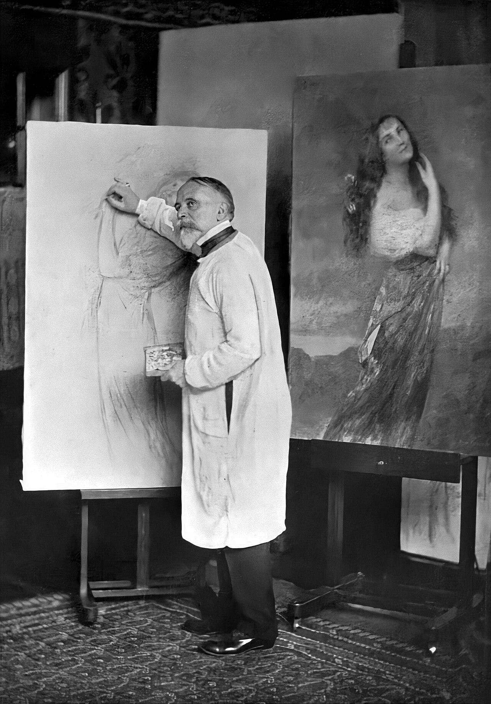
#531 · vertical · vertical · 1938x2774 · Public domain File:Photographic portrait of Pierre Carrier-Belleuse at his studio, 1913.jpg · 1280x1832 https://commons.wikimedia.org/wiki/File:Photographic_portrait_of_Pierre_Carrier-Belleuse_at_his_studio,_1913.jpg
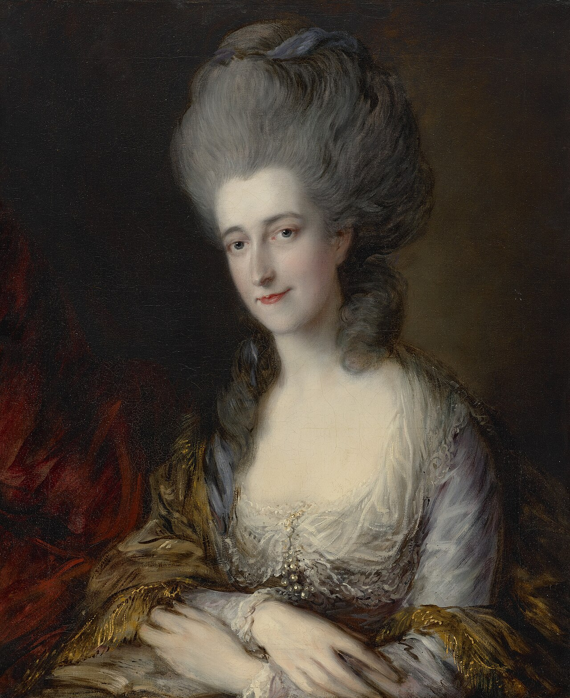
#532 · vertical · vertical · 2616x3200 · Public domain File:Portrait of Dorothea, Lady Eden, née Johnson (1742-1792) (by Thomas Gainsborough).jpg · 1280x1566 https://commons.wikimedia.org/wiki/File:Portrait_of_Dorothea,_Lady_Eden,_n%C3%A9e_Johnson_(1742-1792)_(by_Thomas_Gainsborough).jpg
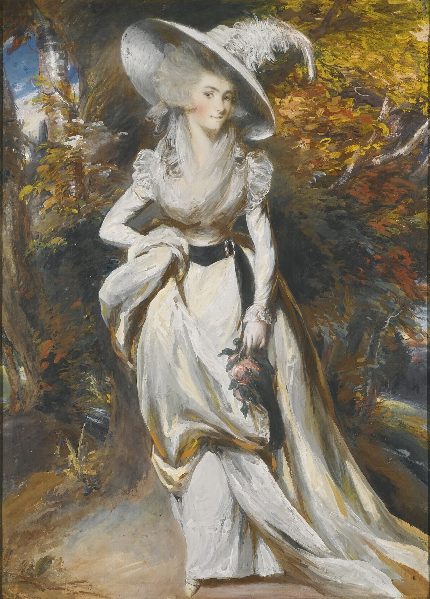
#533 · vertical · vertical · 2247x3127 · Public domain File:Portrait of Elizabeth Hills, later Mrs Thomas Theophilus Cock and Mrs Rand (1765-1853) (by Daniel Gardner).jpg · 1280x1781 https://commons.wikimedia.org/wiki/File:Portrait_of_Elizabeth_Hills,_later_Mrs_Thomas_Theophilus_Cock_and_Mrs_Rand_(1765-1853)_(by_Daniel_Gardner).jpg
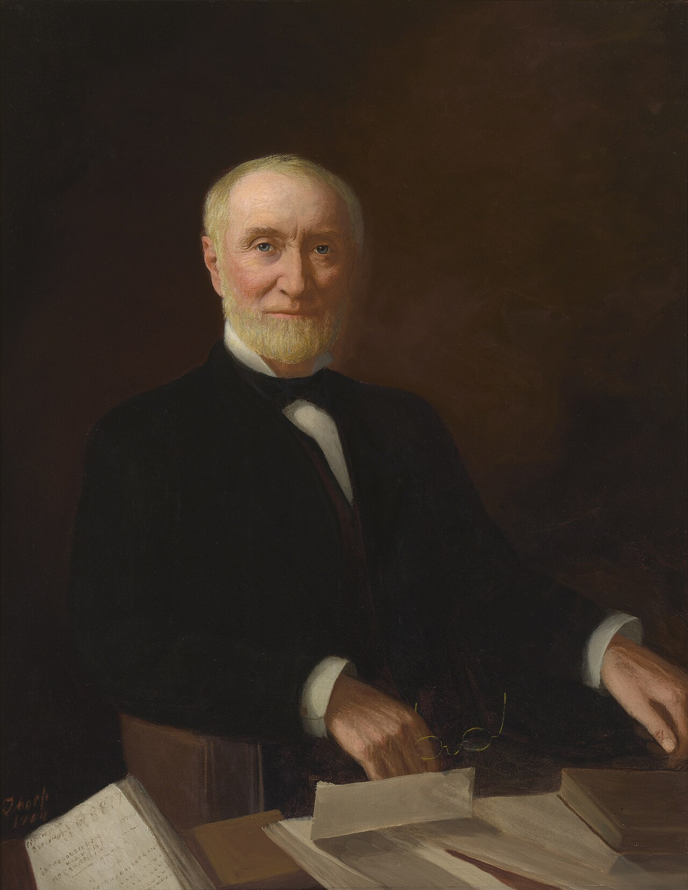
#534 · vertical · vertical · 3096x4000 · Public domain File:Portrait of Joseph G. Cannon by Freeman Thorp.jpg · 1280x1654 https://commons.wikimedia.org/wiki/File:Portrait_of_Joseph_G._Cannon_by_Freeman_Thorp.jpg
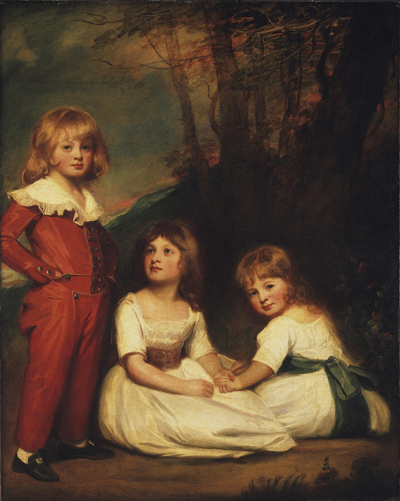
#535 · vertical · vertical · 3267x4096 · Public domain File:Portrait of the Willett Children (by George Romney).jpg · 1280x1605 https://commons.wikimedia.org/wiki/File:Portrait_of_the_Willett_Children_(by_George_Romney).jpg
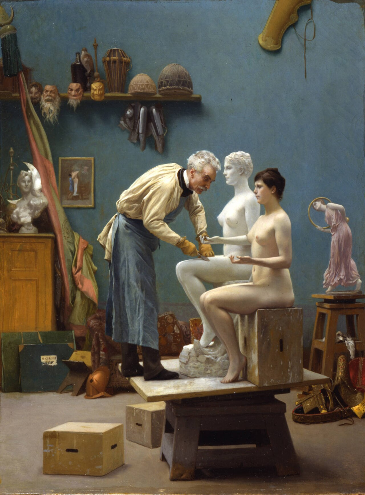
#536 · vertical · vertical · 1328x1800 · Public domain File:Working in Marble (Gerome).jpg · 1280x1735 https://commons.wikimedia.org/wiki/File:Working_in_Marble_(Gerome).jpg